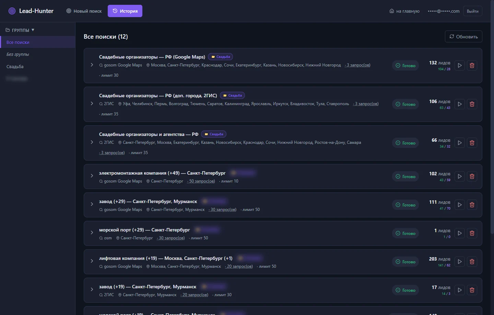
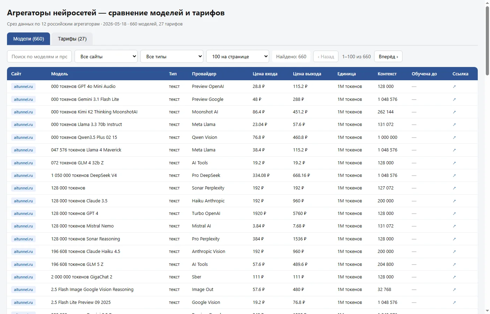

Автоматизация и парсеры
Собираю данные там, где их «нельзя собрать»: карты, реестры, мессенджеры, биржи заказов. Готовые сервисы парсят источники, обогащают записи из ФНС и финотчётности, сегментируют ИИ и отдают чистые выгрузки — с обходом капч, антибота и юридических граблей. Рутина уходит на автопилот.
Lead-Hunter — фабрика B2B-лидов под ключ
Единый пульт: 6 парсеров карт и реестров (Google Maps, 2ГИС, OpenStreetMap, HH, Apify, Yandex) + каскад обогащения (email и роли контактов со страниц сайта, ФНС ЕГРЮЛ, Rusprofile, финансы РСБУ, ИИ-сегментация) + выгрузки Excel / Google Sheets / PDF. Поиск, который раньше занимал ~11 часов, идёт ~1,5 часа — обогащение стартует одновременно с парсингом, и лиды «созревают» в реальном времени.
- Pipelined-архитектура: 6 фаз бегут параллельными воркерами с каскадными зависимостями (Rusprofile только если ФНС не нашёл, финансы — только при наличии ИНН).
- Adaptive concurrency: сервис читает RAM/CPU и сам пересчитывает лимиты воркеров — при апгрейде VPS масштабируется без правок кода.
- Обход граблей: геолокация Apify, Cloudflare на Rusprofile, юридический запрет Yandex на лидген — всё заложено в архитектуру.


Парсер агрегаторов нейросетей
Собрал каталог моделей и тарифов с 12 российских агрегаторов ИИ в единую базу с нормализацией цен в ₽ за 1M токенов. 12 отдельных парсеров под каждый сайт (HTTP+BeautifulSoup, где можно, и Playwright для SPA с пагинацией). То, что вручную заняло бы недели сравнения по 12 сайтам, обновляется одним прогоном. Живой веб-каталог с фильтрами и выгрузкой Excel.
Ещё сервисы сбора данных
Нажмите на карточку — откроется подробнее, не уходя со страницы.